Steam 협동 공포 게임 Empty House에서 사용할 캐릭터와 애니메이션을 제작하기 위해 영상 생성, 3D 복원, SMPL 리깅, 모션 베이킹을 연결한 자동화 파이프라인을 1인으로 기획·설계·구축했습니다. 생성한 캐릭터와 애니메이션은 Unity 게임에 적용했습니다.
Empty House는 Steam에 출시한 협동 호러 게임입니다. 이 페이지는 게임 제작에 활용한 캐릭터·애니메이션 자동화 파이프라인을 다룹니다.
왼쪽은 파이프라인으로 만든 캐릭터가 실제 게임에서 움직이는 장면, 오른쪽은 입력 영상과 리깅·베이킹 결과를 나란히 놓은 비교입니다.
캐릭터 하나(walker)가 입력에서 게임까지 가는 실제 산출물입니다.
외형과 동작을 영상에서 따로 복원한 뒤, 하나의 SMPL 골격 위에서 합칩니다.
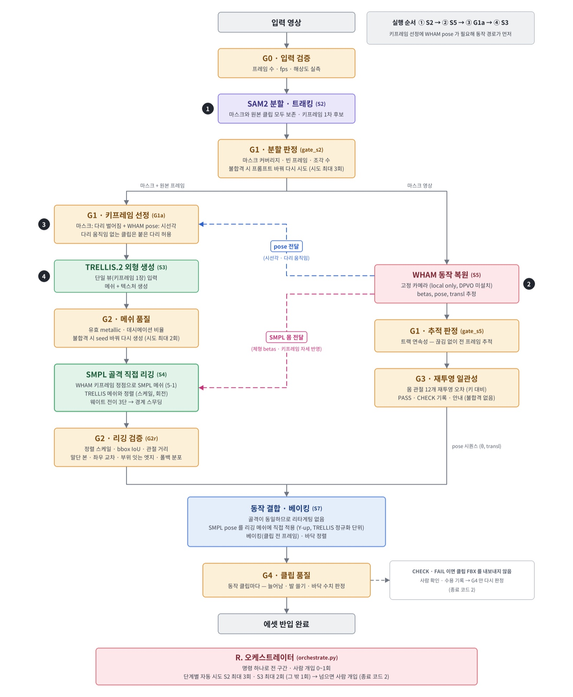
캐릭터 레퍼런스 이미지를 첫 프레임으로 고정해 영상 생성 모델(Veo/Gemini)로 동작 영상을 만듭니다. 프롬프트의 문구 하나가 보폭·접지·자세를 바꾸기 때문에, 동작별 프롬프트를 생성 결과의 발 접지 수치로 비교해 정했습니다.
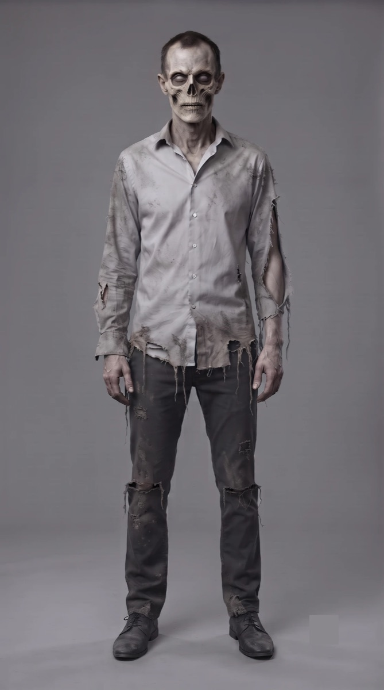
배경을 지우고 캐릭터만 남긴 클립을 다음 단계로 넘깁니다. 마스크 품질은 게이트가 자동 검사합니다.
영상에서 프레임별 3D 자세와 위치를 SMPL 파라미터로 추정합니다. 복원된 3D 몸을 원본 영상 위에 투영하면 추정이 얼마나 맞는지 눈으로 확인할 수 있습니다.
영상에서 자세가 좋은 키프레임 한 장을 자동 선별해 텍스처가 입혀진 3D 메쉬를 생성합니다. 키프레임 선별 기준(팔이 몸에서 떨어진 자세 등)은 실패 사례를 분석해 규칙으로 만들었습니다.
WHAM의 체형으로 만든 SMPL 몸을 TRELLIS 메쉬에 정렬하고, SMPL 몸에 Blender 자동 웨이트를 입힌 뒤 그 웨이트를 3단계(최근접 표면 → 메쉬 연결 전파 → 거리 폴백)로 전이합니다. 가까운 표면만 따르면 손 정점이 허벅지 웨이트를 받습니다. 이 오배정은 부위 제약으로 막았습니다.
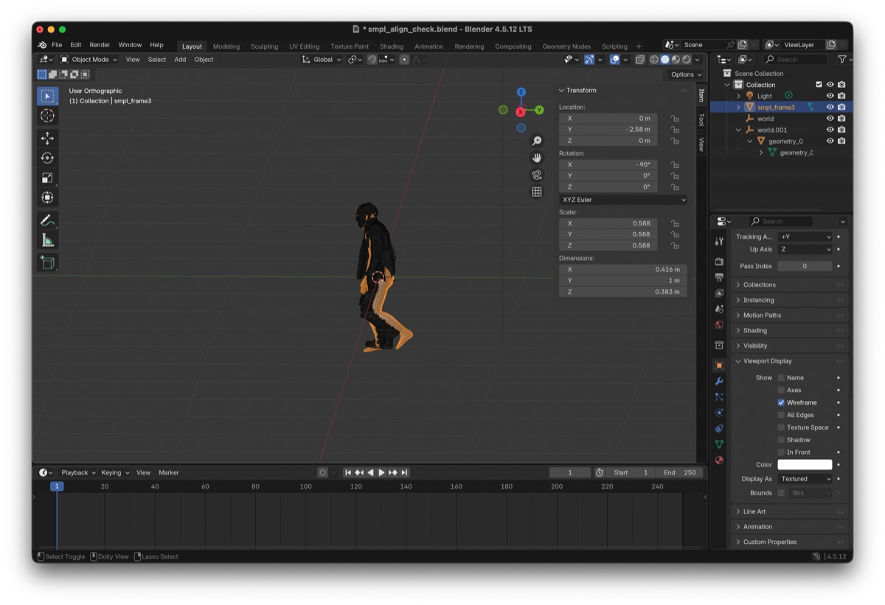
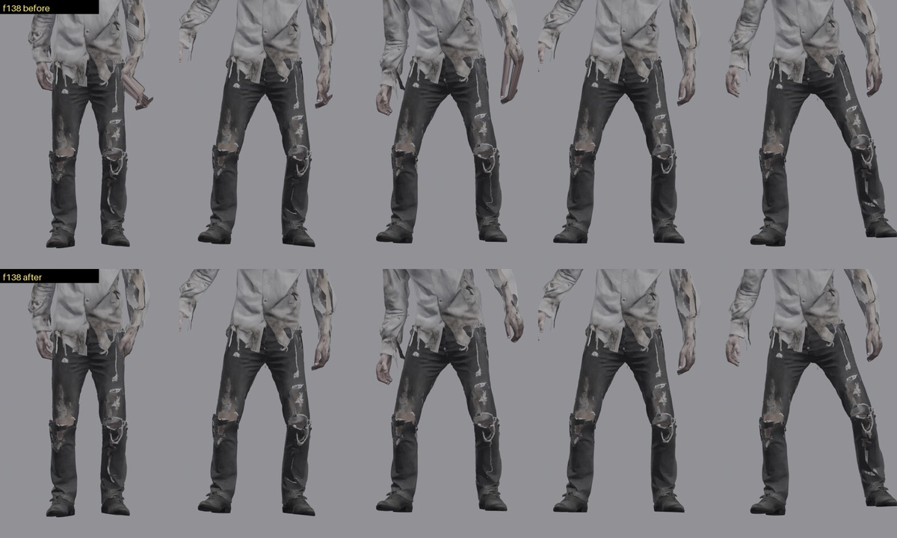
외형과 동작의 골격이 같으므로, 복원한 SMPL pose를 리그에 그대로 적용해 베이킹합니다. 원본 영상과 베이킹 결과의 비교 영상은 제작 결과에 있습니다.
FBX로 내보내 팀에 공유하고 게임에 적용했습니다. 캐릭터 10종, 클립 115편 — 아래는 이 파이프라인으로 만든 걷기·피격·쓰러짐·일어나기·포효 동작이 실제 게임에서 재생되는 장면입니다.
주요 구현은 SMPL 골격 통일, 웨이트 전이와 경계 스무딩, 애니메이션 품질 검증입니다. 각 문제는 현상 확인 → 수치로 원인 특정 → 수정 → 적용 클립 전체 재검사 순서로 처리했고, 기록은 저장소 문서에 날짜별로 남아 있습니다.
처음에는 생성 메쉬를 Mixamo로 리깅하고 WHAM의 SMPL 동작을 Mixamo 골격으로 옮겼습니다(Unity Humanoid, 행렬 계산, 컨스트레인트 세 방식). SMPL(24본)과 Mixamo(65본)의 뼈 구조가 달라 세 방식 모두 관절 동작이 사라지거나 팔이 엉키는 등 자세가 무너졌습니다. 리타겟팅을 고치는 대신 WHAM이 복원한 SMPL 몸을 생성 메쉬에 정렬해 SMPL 골격으로 직접 리깅했고, 캐릭터와 동작의 골격이 같아져 동작을 변환 없이 적용합니다.
다리를 들거나 팔을 움직일 때 가랑이와 겨드랑이의 메쉬가 막처럼 늘어났습니다. 늘어난 엣지의 87%가 웨이트 전이가 만드는 딱 잘린 경계(한 정점은 왼다리만, 옆 정점은 오른다리만 따름)에서 나온다는 것을 측정으로 확인하고, 경계 주변 띠만 스무딩하는 후처리를 구현했습니다. 띠 밖 웨이트는 바뀌지 않아 기존 적용 클립의 회귀는 0건이었고, 격리해 둔 클립 18편을 다시 쓸 수 있게 됐습니다.
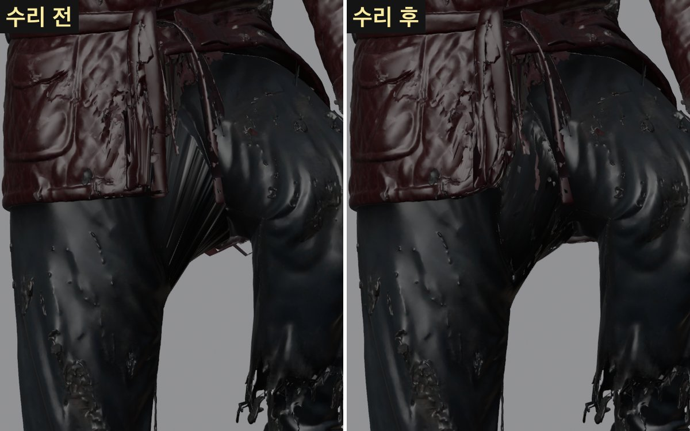
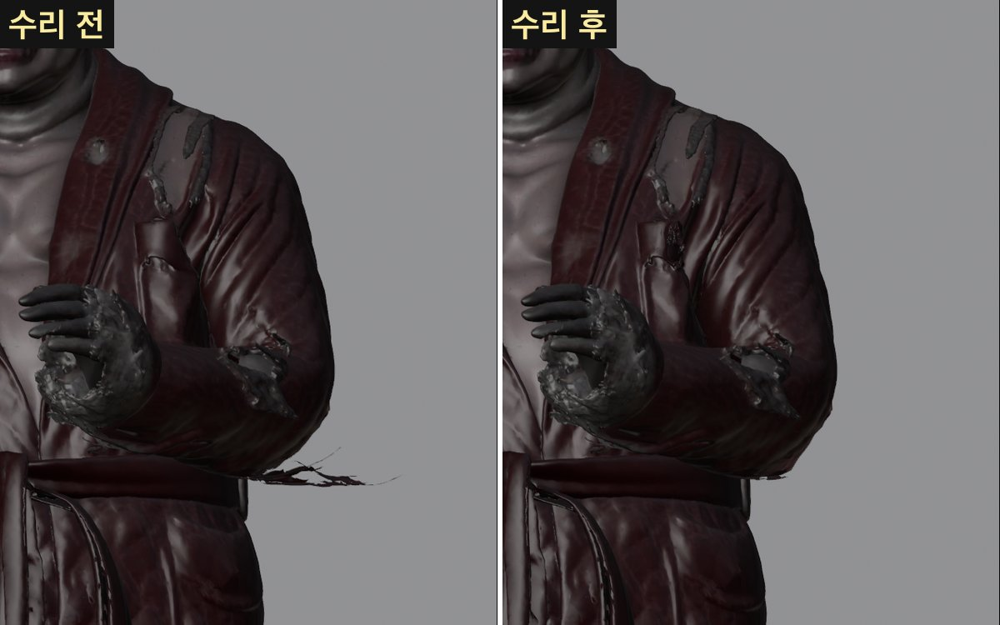
생성 메쉬는 UV 이음매에서 정점이 끊겨 있어 웨이트 전파(BFS)가 이음매를 넘지 못하고 거리 폴백으로 떨어집니다. 같은 좌표의 정점을 이어 주는 옵션(bfs-weld)을 넣자 폴백은 줄었지만, 이음매 건너편의 딱 잘린 웨이트를 그대로 복사해 늘어남이 커졌습니다. 옵션으로만 남기고 기본값은 off로 두었습니다.
| 지표 | 측정 대상 | 기본 | bfs-weld | 판정 |
|---|---|---|---|---|
| 3차 폴백 비율 | 리그 | 11.64% | 0.66% | 개선 |
| 겨드랑이 늘어난 엣지 (0.10 초과) | run 클립 | 266 | 394 | 악화 |
| 팔–하부 몸통 오배정 엣지 | 리그 | 1,048 | 1,159 | 악화 |
측정 조건: listener 리그(listener_apose_06), 2026-10-21. 겨드랑이 늘어남은 사례 ②의 경계 스무딩으로 따로 해결했습니다(266 → 0).
팀원의 "미끄러져 보인다"는 피드백을 접지 중 발이 몸 아래로 쓸리는 속도로 수치화했습니다. 문제 클립은 무릎만 드는 제자리걸음(쓸기 ≈ 0)이었고, 같은 SMPL 골격을 쓰는 다른 캐릭터의 달리기 동작을 이식해 고쳤습니다. 이 지표는 G4의 판정 항목으로 넣었고, 클립마다 미끄러지지 않는 권장 이동 속도를 함께 공유합니다.
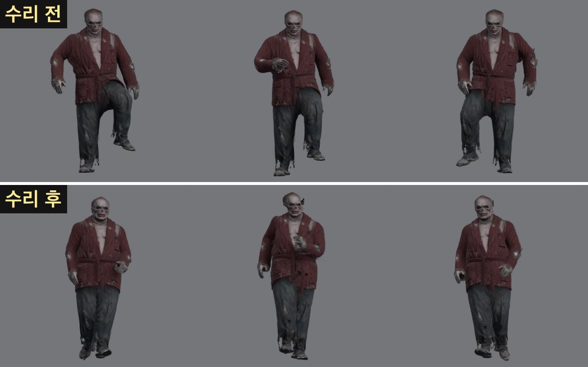
베이킹이 서서 시작하는 동작을 전제로 하고 있어, 눕거나 엎드리는 동작에서 몸이 바닥에서 뜨거나 묻혔습니다. 몸의 최저점이 바닥에 닿도록 루트 높이를 정렬하는 단계를 추가하고 같은 검사를 G4에 넣었습니다. 이미 적용한 클립을 전부 다시 검사해 결함 2건을 더 찾아 교체했습니다.
"디딘 발이 러닝머신 벨트처럼 뒤로 쓸려 간다"는 문장을 프롬프트에 넣으면 달리기의 발 쓸기 수치가 커집니다. 대신 상체 자세가 사양에서 벗어나는 부작용을 실측으로 확인했고, 동작별로 접지 수치와 자세를 함께 보고 프롬프트를 정했습니다.
단계별 품질 게이트로 입력·메시·리깅·애니메이션 상태를 검사했습니다. 자동 기준을 충족하지 못한 클립은 별도 검토하고, 수용 사유와 판정 결과를 기록했습니다.
| 게이트 | 단계 | 검사 항목 |
|---|---|---|
| G0 | 입력 | 프레임 수 · 프레임레이트 · 해상도 (ffprobe 실측) |
| G1 gate_s2 · gate_s5 · G1a | 분할 · 동작 추적 · 키프레임 선정 | 마스크 품질 — 다음 단계에 쓸 수 있는 분할인지 · 트랙 연속성 — 끊김 없이 전 프레임을 추적했는지 · 외형 생성에 넣을 키프레임 자동 선정(다리 벌어짐 · 시선각) |
| G2 G2 · G2r | 메쉬 · 리깅 | 메쉬 재질 오류 · 면 수 비율 · 골격-메쉬 거리, 좌우 교차 배정, 폴백 분포, 부위 경계 엣지 |
| G3 gate_g3 | 동작 복원 후 | 재투영 일관성 — 추적 이상 구간 표시. 눕기 · 기기 동작의 추정 불안정을 굽기 전에 알림, 불합격 판정에는 쓰지 않음 |
| G4 | 베이킹 후 | 메쉬 늘어남(찢어짐), 발 미끄러짐 속도, 바닥 정렬 |
G4 최종 판정 — 반입 98편(dog 제외): PASS 85 · ACCEPTED 13 · CHECK 0. ACCEPTED는 기준에 못 미치지만 사유를 남기고 수용한 클립입니다.
PyTorch·CUDA 버전이 다른 모델 실행 환경을 Docker 이미지로 통합했습니다. RunPod 서버에서 영상 입력부터 FBX 출력까지 명령 하나로 실행하며, 품질 검사와 완료 상태 기록을 통해 실패 단계의 재시도와 이어받기를 지원합니다.
| 실행 | 벽시계 | 판정 |
|---|---|---|
| 캐릭터 walker_walk_02 | 364초 · 481초 · 438초 (3회) | S2 · S5 · G2 · G2r PASS, 세 번째 실행에서 G3 PASS — 영상 1편 → 리깅된 FBX |
| 동작 클립 listener_hit_01_v2 | 117초 · 118초 (2회) | G4 PASS (늘어남 · 바닥), 두 번째 실행에서 G3 PASS — 영상 1편 → 클립 FBX |
RunPod RTX 4090 서버 한 대에 통합 이미지(Blender 4.5 LTS 포함)를 띄워 명령 하나로 실행했습니다. G3는 세 번째 캐릭터 실행과 두 번째 클립 실행부터 포함됐습니다(같은 날 구현). 메쉬 생성 단계의 시간이 실행마다 달라(210 · 326 · 276초) 벽시계가 흔들립니다.
환경은 torch 1.11~2.5, CUDA 11.3~12.4로 서로 충돌해 이미지 안에서 분리해 둡니다. 이미지는 비공개 레지스트리(GHCR)에 있어 접근 권한이 필요하고, 재배포가 금지된 SMPL 계열 가중치 3개는 이미지에서 제외해 실행할 때 볼륨에서 연결합니다. 모델 캐시와 입출력 데이터도 볼륨에 둡니다.
GPU 구간에서 Blender 구간으로 넘어가기 전에 오케스트레이터가 그 서버에서 Blender를 실행할 수 있는지 확인하고, 실행할 수 없으면 멈추고 이어받는 방법을 출력합니다. 이미지 빌드와 레지스트리 push는 수동입니다. 절차는 RUNBOOK에 있습니다.
게이트 판정 규칙, 오케스트레이터의 이어받기·재시도, 웨이트 경계 스무딩 계산을 합성 입력으로 시험합니다. push할 때 GitHub Actions가 실행하며(경로 필터 적용), 실제 데이터 미러가 있어야 도는 시험은 CI에서 제외하고 로컬에서 돌립니다. CI는 테스트 자동화까지이고, Docker 이미지 빌드·배포는 포함하지 않습니다.
집계 기준: main 27ca638 · 2026-11-21 실행 (16 passed, 7 skipped).
좀비 6종과 플레이어 4종입니다. 모두 이미지 1장에서 출발해 같은 파이프라인으로 생성한 3D 메쉬이고, 게임에 적용했습니다.
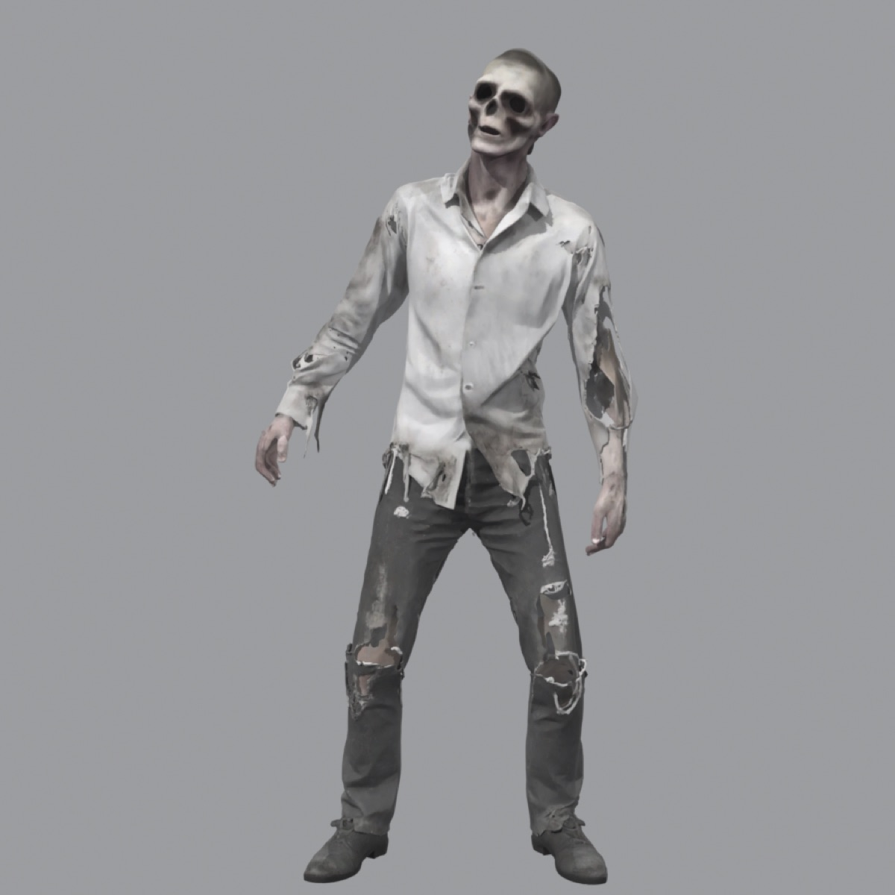
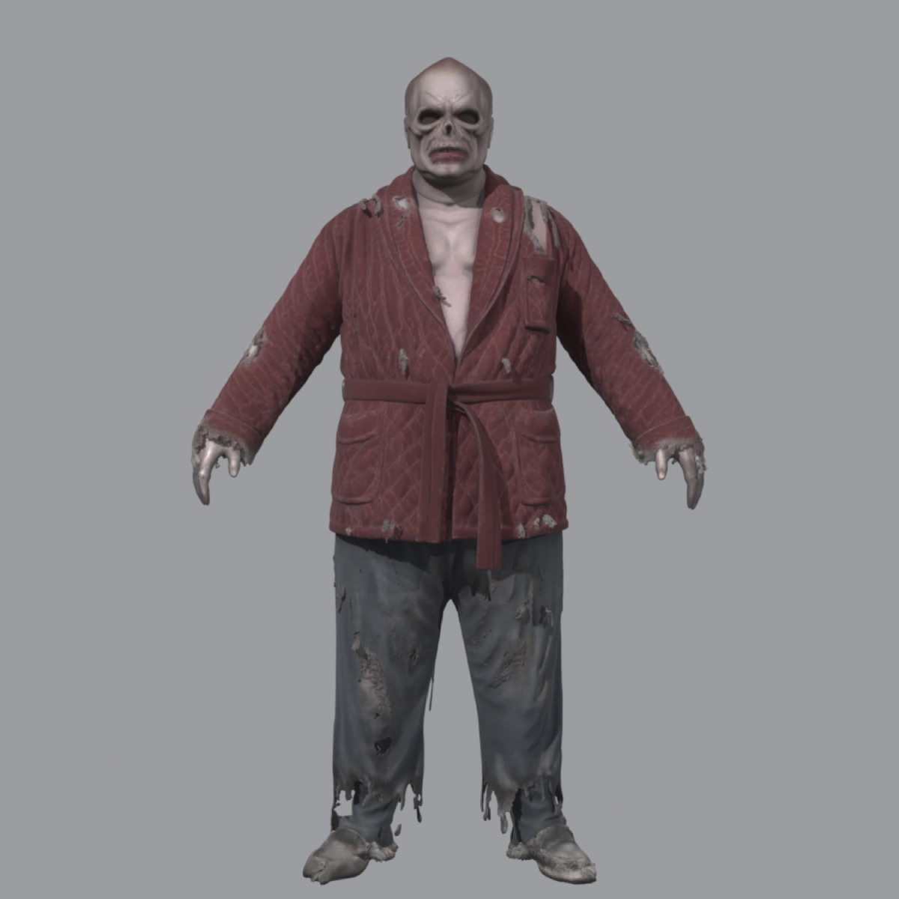
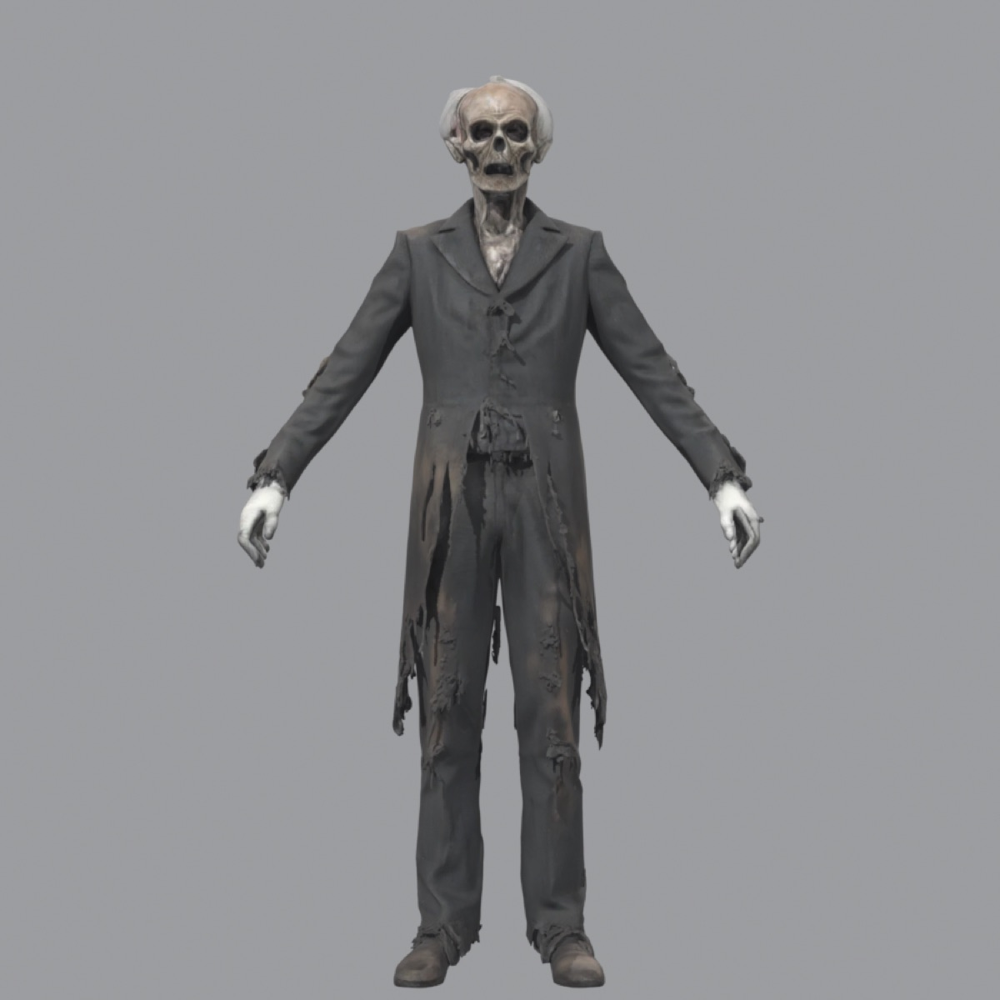
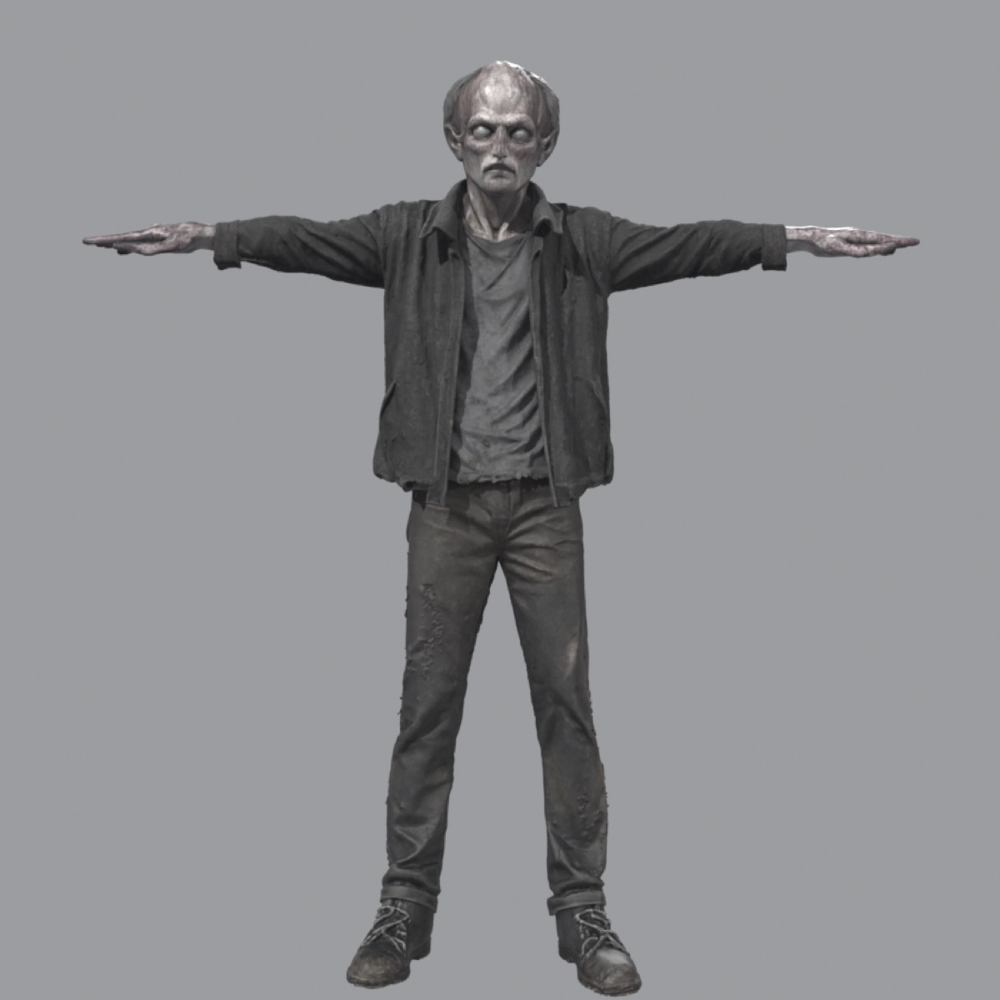
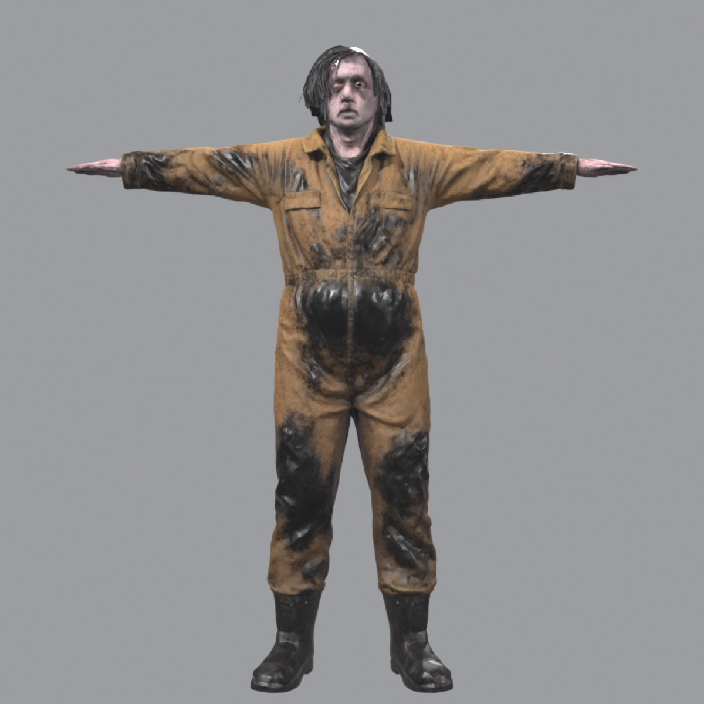
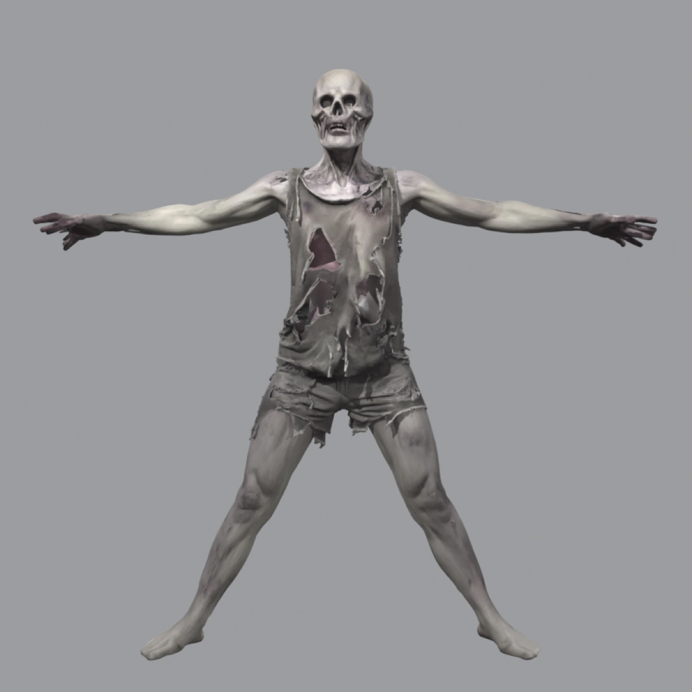
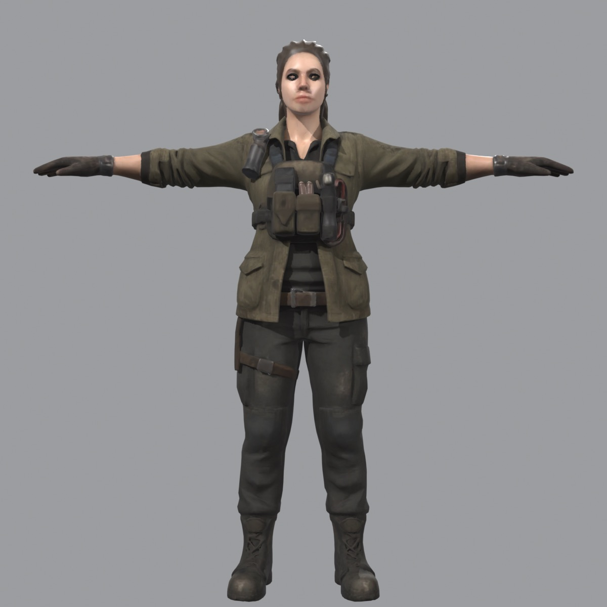
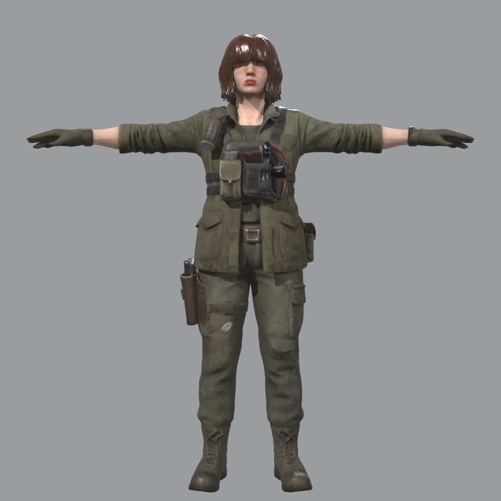
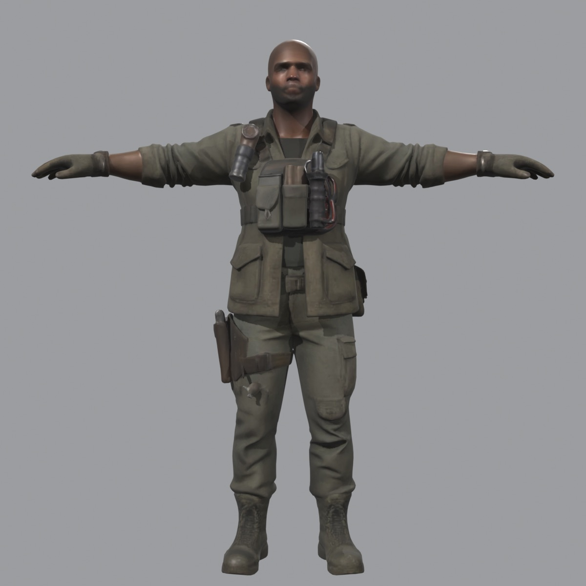
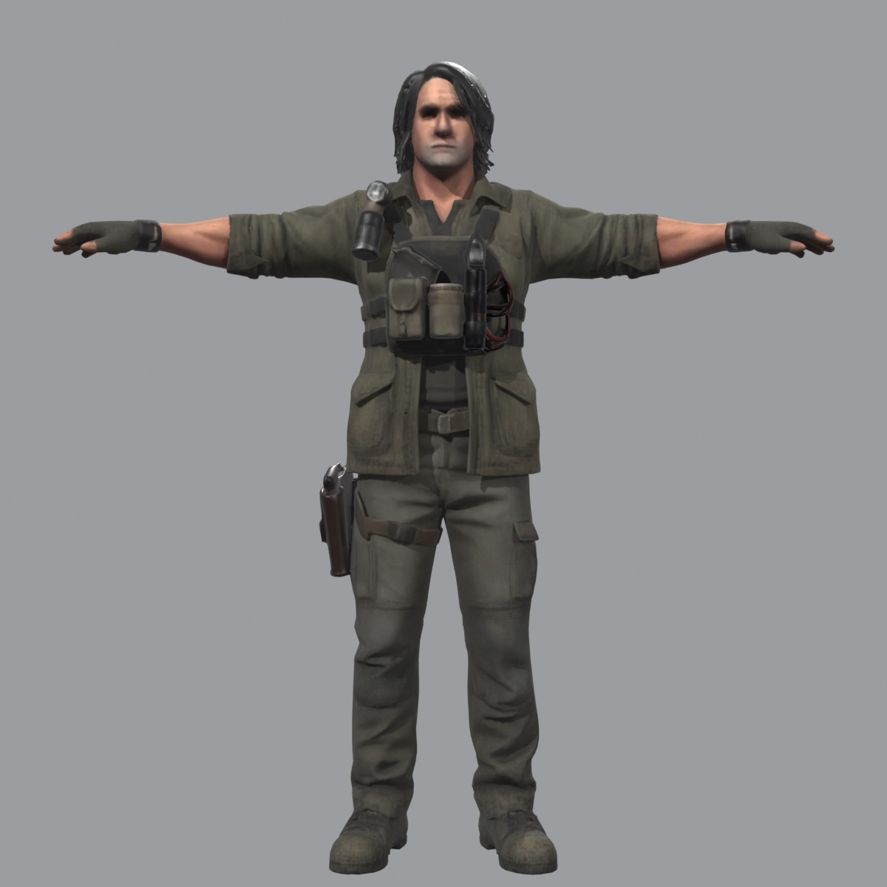
캐릭터 1종 또는 동작 클립 1편을 만드는 데 드는 시간과 비용입니다. 시간은 한 서버에서 명령 하나로 실행한 벽시계 실측(2026-11-21, 캐릭터 3회 · 동작 클립 2회)이고 영상 생성과 서버 기동은 제외했습니다. 비용은 생성 모델의 공식 단가와 GPU 시간당 요금으로 산출해 청구 내역과 대조했습니다. 수작업 제작 수치는 외부 자료에 나온 일반적인 참고 범위이며, 이 프로젝트에서 직접 측정한 값이 아닙니다. 본 파이프라인은 아티스트의 리터치를 대체하지 않습니다.
| 산출물 | 수작업 제작 (외부 자료 참고 범위) | 본 파이프라인 |
|---|---|---|
| 캐릭터 1종 | 모델링·텍스처 3일~4주 + 리깅 수일 | 약 6~8분 · 약 $2 — 리깅까지 포함 |
| 동작 클립 1편 | 키프레임 1~1.5일 또는 모캡 클립당 $50~200+ | 약 2분 · 약 $1.7 — 자동 게이트 판정 포함 |
| 영상 → FBX 세트 | — (직접 대응하는 외부 자료 없음) | 약 8~10분 · 약 $4 — 명령 하나 |
메쉬 생성(TRELLIS.2) 단계의 시간은 실행마다 달라집니다 — 같은 영상으로 2026-11-21 세 번 실행에 210초 · 326초 · 276초, 2026-11-07에는 457초(GPU 구간만 10.1분)였습니다.
영상 생성은 Veo 3.1(편당 $0.80, 8초 기준)을 사용하다 제공 종료 이후 Gemini Omni 1.1 Flash로 이행했습니다. 단가는 2026-11 조회한 공식 가격 — Omni는 영상 출력 $17.50/M토큰으로 10초(86,880토큰)에 $1.52, Veo 3.1 Fast는 $0.10/초(일부 구간은 standard $0.40/초 사용). 표의 비용 구성(현행 단가 기준): 캐릭터 1종 ≈ 영상 $1.52 + 참조 이미지 $0.04 + GPU $0.09~0.46, 동작 클립 1편 ≈ 영상 $1.52 + GPU $0.03~0.19, FBX 세트는 두 항목의 합(≈$3.7)입니다.
수작업 제작 참고 범위의 출처: Pixune(캐릭터 제작 기간) · Animator Island(게임 애니메이션 하루 5~10초) · Mocap Online(모캡 비용). 본 파이프라인 수치는 실행 로그와 RunPod · Google AI Studio 청구 내역에서 집계했습니다.